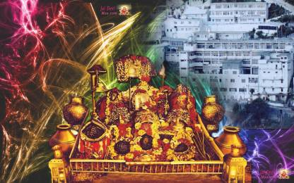

|  | Shri Mata Vaishno Devi |
Vaishno Devi (also known as Mata Rani, Trikuta, Ambe and Vaishnavi) is a manifestation of the Hindu Mother Goddess, Devi. The words
"Maa" and "Mata" are commonly used in India for thus are often heavily used in connection with Vaishno Devi. Vaishnavi was formed
from the combined energies of Kali, Lakshmi, and Saraswati.
The Vaishno Devi Temple is an important Hindu temple dedicated to Vaishno Devi located in Katra at the Trikuta Mountains within
the Indian Union territory of Jammu and Kashmir. The temple is one of the 108 Shakti Peethas dedicated to Durga, who is worshipped
as Vaishno Devi. It is one of the most visited pilgrimage centers of India. Every year millions of visitors visit the temple.
During festivals like Navaratri, the count even increases to one crore visitors.
There are many temples to visit nearby Katra. The temples are filled with both sizzling beauty of mountains and devotion which
make the soul of the visitor calm and give him inner peace of mind. Temples like bhoomika mandir, deva mai also trace the story of Goddess
Vaishno Devi.